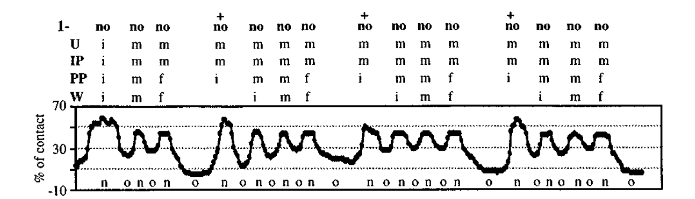
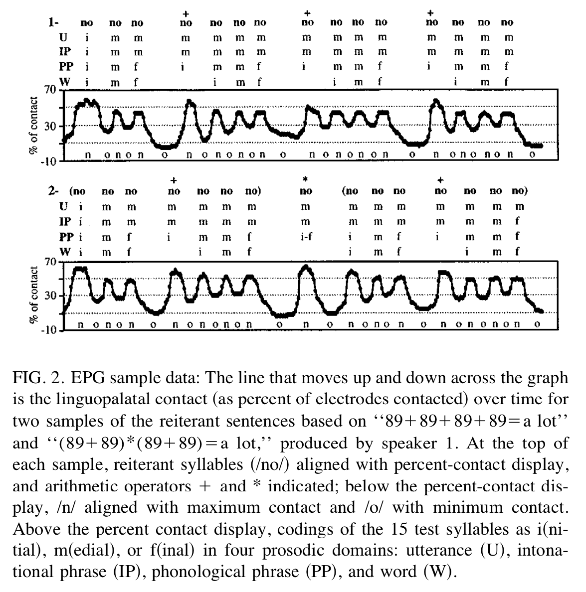
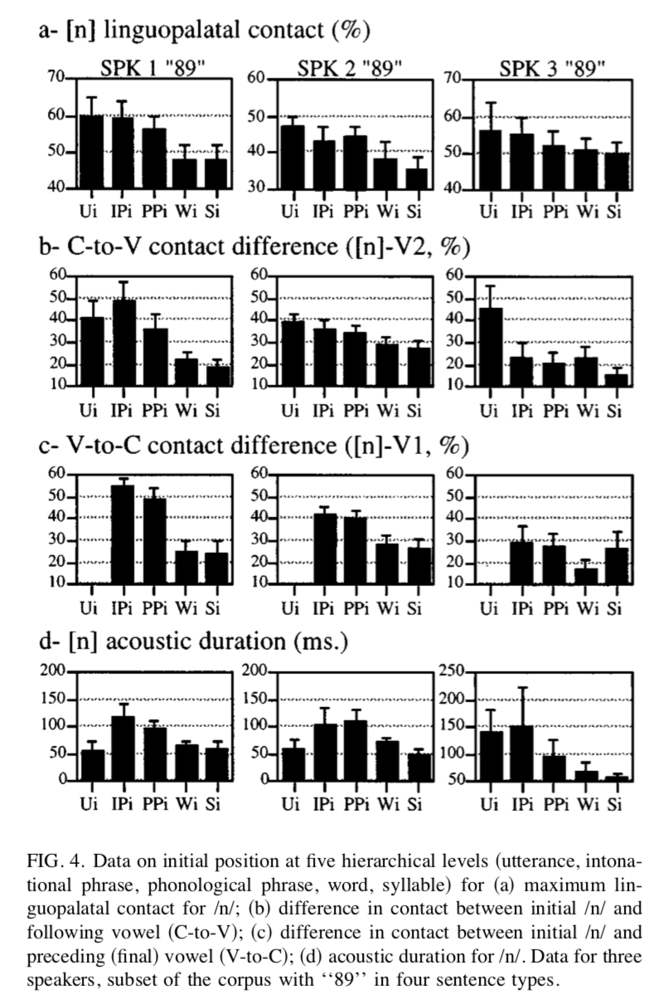

They clearly carry information
“Let’s eat, Grandpa”
“Let’s eat Grandpa”
They affect articulation
Prosodic boundaries should have some reflex in the phonetic signal
Different types of boundaries may have different effects
Boundaries of different hierarchical levels may be different
There may be declination (an overall downward trend) within boundaries

The experimental design seems a tiny bit strange to me. What are the benefits of having such a relaxed (?) design. (Relaxed, as in, just telling the participants to “speak moderately fast and to convey the mathematical meanings indicated” (3730). - Dominique
Reiterant speech—can we talk about this as a method? It seems smart (and useful for something like EMA especially), but definitely far from naturalistic—can we talk about this tradeoff? (And why couldn’t the reiterant speech be used for word final position?) - Dom
“Utterance” or “U”- Full Phrase
“Intonational Phrase” or “IP” - A complete intonational contour with boundary tone
“Phonological Phrase” or “PP” - Smaller level of representation w/ one pitch accent and phrase tone
“Word” or “W” - One word (like “Nonono”)

“Does amount of contact vary at different places within prosodic domains?”
If not, all contact should be consistent throughout the domains

Utterance, IP and PP Initial /n/ are stronger
No effect for Word
This is not due to stress
The story is less clear for /o/
No consistent effect for /n/
Domain final /o/ shows strengthening
All speakers have domain final /o/ stronger than medial
Usually final is stronger than initial, too
No evidence for within-domain declination
No evidence for sentence level declination or strengthening
| ### Across-Domain Results |
| - “Does amount of contact vary depending on the type of prosodic boundary?” |
| - If not, all strengthening should be consistent across domains. |


Speakers Vary!
Different speakers appear to “group” the domains differently
Some distinguish U and IP, some distinguish IP and PP…
There’s no clear story here
Syllable != Word
Word != PP
PP != U/IP
3 speakers
Higher domain is variable
No strong link between hierarchy and V duration
There’s some evidence that different levels of hierarchy matter
Speakers Vary!
Is an r squared of 0.2 worth reporting ?? Especially if it was only with one of the three? - Dom
With this much across-speaker variability, how can we claim these hierarchical effects are extant in language at all? - Will
YES!
Cs and Vs vary in articulation strength depending on position in the utterance
YES!
Variations due to positioning appear to be linked to prosodic boundaries
Domain initial Cs are stronger
Domain final Vs are stronger
Articulatory strengthening delimits prosodic boundaries!
It’s complicated!
Different levels of hierarchy show different levels of strengthening
Although the nature of it is very variable among speakers
In contrast, it is surprising that final vowel lengthening marked only two distinctions in our corpus, between word and higher levels, but not between the two phrasal levels as was shown in Wightman et al. 1992. We have no explanation for this.
There’s no evidence for an independent declination effect
It appears that the influence of prosodic domains on articulation varies for vowels and consonants. The localized effect at prosodic main edges is initial strengthening for consonants and final strengthening for vowels. What is the possible explanation for this difference? - Fahad
On page 3737, the authors list both “increased coarticulation” and “greater coarticulatory resistance” as possible mechanisms for inducing strengthened segments. I was wondering if these would both take place within the same speaker, and whether those two different approaches to coarticulation tell us different things about what the speaker might be doing. - Dominique
Strengthening can help distinguish word boundaries from higher levels
It might signal different prosodic boundaries (and their levels) for listeners
It might enhance segment-specific qualities aiding in lexical access
So far the evidence for the lack of supralaryngeal declination is drown from speech that does not involve communication with a speaker.What would the effect of declination in articulation look like when the data were drawn from communication between two speakers? - Fahad
Can we also talk about ‘articulatory effort’? This is a term that is never really given a sufficient definition, and it’s unclear what relationship articulatory effort has with speech processes (since it’s so variably defined). - Dom
Prosodic Boundaries affect articulations
Domain-initial Cs and Domain-final Vs are stronger
Interactions with the prosodic hierarchy are speaker-specific
You need to attend to prosody when studying articulation!